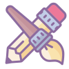

Información General
- Andrea (Lloyka) Pérez Harambour
- laloica@anartist.org
- +56 9 6425 2675
- Concepción, Chile.
Porfolios y Redes
Oficios
Artes Gráficas
- 
- Ilustración
- Encuadernación
Artes Textiles
- Bordado
- Costura
Habilidades técnicas
Desarrollo Web

- HTML5

- CSS3

- Wordpress
Software y Herramientas

- Illustrator
- Procreate

- Excel
Artista autodidacta, bordadora y gestora cultural con más de 12 años de experiencia en la creación, enseñanza y difusión de oficios textiles. He desarrollado y facilitado talleres de costura, bordado y autogestión del tiempo, aplicando metodologías colaborativas para grupos pequeños. Mi trabajo se ha vinculado a la gestión y producción de proyectos culturales y artísticos. Cuento con experiencia en producción técnica, gestión administrativa y coordinación de estrategias para proyectos de carácter social y cultural. Además, he complementado mi trayectoria con formación en marketing digital, desarrollo web y emprendimiento. Me destaco por mi capacidad para trabajar en equipo, mi atención al detalle y mi habilidad para gestionar proyectos de manera efectiva, desde la planificación y producción hasta la administración y ejecución en diversos contextos.
Experiencia Laboral
La Loica
Solopreneur, Diciembre 2013 - Presente (11 años 2 meses), Concepción, Bío-Bío, Chile
- Creadora y diseñadora en taller textil "La Loica".
- Ganadora del Capital Semilla Abeja de SERCOTEC 2015, Punta Arenas.
- Ganadora de capital de emergencia de emprendimiento de la Municipalidad de Concepción 2020.
- Ganadora de fondo para emprendimientos Prodemu Concepción 2020.
- Ganadora de Fondo Impulsa de CDI Chile Concepción 2021.
Goethe-Institut São Paulo
Productor Técnico, Diciembre 2021 - Diciembre 2021 (1 mes), Concepción, Bio Bio, Chile
- Producción técnica del ciclo de charlas CTRL+ "Culturas, territorios y resistencias latinoamericanas".
Corporación Cultural Tramadas
Asistente de Producción, Noviembre 2017 - Agosto 2021 (3 años 10 meses), Chile
- Productora local para Tramadas, ganadora de la licitación de participación ciudadana para creación de plan de gestión para la Escuela Municipal de Arte “Casa Azul” en Punta Arenas.
- Asistente de producción en mapeos colectivos para la creación del Plan Municipal de Cultura de la Municipalidad de La Unión.
- Productora técnica en capacitaciones de “Gestión para el desarrollo cultural local” para la Seremi de las Culturas, las Artes y el Patrimonio de la Región de la Araucanía.
- Encargada de la creación y manejo de plataformas online para capacitación virtual y asistencia técnica.
Inventiva Lab
Productor General, 2012 - 2021 (9 años), Punta Arenas, Magallanes y Antártica Chilena, Chile
- Productora general del documental “Cazador de Nómades”, ganador del fondo Cultura y Difusión de las Culturas Indígenas de CONADI.
- Ejecutora de proyectos socio-culturales en programas de reinserción escolar y social.
Parlamento Chile
Coordinadora Territorial, Marzo 2017 - Agosto 2018 (1 año 6 meses), Punta Arenas, Magallanes y Antártica Chilena, Chile
- Coordinadora en vinculación y desarrollo de estrategias con organizaciones y movilizaciones territoriales en el equipo parlamentario del Diputado Gabriel Boric Font.
Cooperativa Kaudal
Productor General, Marzo 2017 - Diciembre 2017 (10 meses), Punta Arenas, Magallanes y Antártica Chilena, Chile
- Gestora y socia fundadora de la cooperativa de trabajo “Kaudal”, ganadora del Fondo Juntos de SERCOTEC 2017.
Fundación Plagio
Productora Local, Enero 2015 - Diciembre 2017 (3 años), Punta Arenas, Magallanes y Antártica Chilena, Chile
- Productora local del concurso Magallanes en 100 Palabras de la Fundación Plagio.
Feria La Porfía
Asistente de Producción, Septiembre 2014 - Diciembre 2017 (3 años 4 meses), Punta Arenas, Magallanes y Antártica Chilena, Chile
- Asistente de Producción del proyecto "La Porfía - Feria de Arte y Diseño de la Patagonia".
Ilustre Municipalidad de Punta Arenas
Productora General, Enero 2014 - Febrero 2014 (2 meses), Punta Arenas, Magallanes y Antártica Chilena, Chile
- Producción general del proyecto “Acordes de Libertad”, ganador del fondo FNDR 2% Seguridad Ciudadana del Gobierno Regional de Magallanes.
Corporación Municipal de Punta Arenas
Monitora Taller de Fotografía, Agosto 2013 - Diciembre 2013 (5 meses), Punta Arenas, Magallanes y Antártica Chilena, Chile
- Monitora de taller de fotografía de prensa en proyecto “Pequeños Corresponsales en Acción”.
Asociación de Mujeres Empresarias de Magallanes AMEMAG
Productor General, Agosto 2011 - Diciembre 2011 (5 meses), Punta Arenas, Magallanes y Antártica Chilena, Chile
- Productora General del proyecto “Mujeres Tejiendo Futuro”.
Ratto Producciones
Fotógrafo, Octubre 2009 - Diciembre 2009 (3 meses), Punta Arenas, Magallanes y Antártica Chilena, Chile
- Fotografía y diseño en licitación de SERNATUR de “Registro audiovisual y fotográfico de puntos turísticos de Magallanes”.
Diario La Prensa Austral
Fotógrafo, Febrero 2009 - Agosto 2009 (7 meses), Punta Arenas, Magallanes y Antártica Chilena, Chile
- Fotógrafa de prensa en diario regional “La Prensa Austral”.
Patagónica Publicaciones S.A. - Diario El Pingüino
Fotógrafo, Octubre 2008 - Febrero 2009 (5 meses), Punta Arenas, Magallanes y Antártica Chilena, Chile
- Fotógrafa de prensa en diario regional “El Pingüino”.
Formación
Programa Talento Digital para Chile - SENCE
Desarrollo de aplicaciones fullstack Javascript Trainee.
Bootcamp de 450 horas. - 2023
Diplomado Diseño y Programación Web. AIEP - Fundación Telefónica Movistar - SENCE.
Diplomado con módulos en Wordpress, HTML5, CSS y JavaScript.
Diplomado de 100 horas - 2022
Programa Talento Digital para Chile - SENCE
Emprendimiento digital con tecnologías web.
Bootcamp de 450 horas. - 2022
Capacitación - SENCE
Técnicas de Marketing Digial.